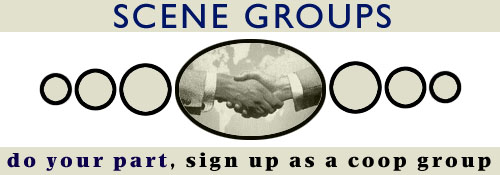

| 
Being a cooperating group means being willing to send your group's current info once a month to scenelink. That's it, nothing more to do, ever. This page explains why we have coop groups, and how to become one. Once you check this page out and decide you want to particpate... |
What ARE cooperating groups? Coop groups are scene groups that think scenelink is a cool idea. They're groups that think it's cool enough that they want to help out in the easiest way they can. They're groups that can see it's in their own best interest to become a cooperating group. There's no requirement for being a coop group, if you're a scene group, just fill out the info on the coop acceptance page and you're in. Being a coop group doesn't mean changing anything, except that you agree to make a small effort to help scenelink in one tiny little way, by sending us an update on your group so that we can maintain the scene index. Sure, maybe we could keep track of everyone's nfo, releases, announcements, and retirements, but wouldn't it be a hell of a lot easier if you kept track of your own group?
What do coop groups have to do? There are actually two things,
2) Coop groups need to pick one member of their group who will be the "contact person." This is the person scenelink will ask whenever we have questions. They're also the only person in your group who ever needs to think about scenelink. At the very most they will get a short coop group listserv from us once a week, and they'll have to fill in the index submission form once a month. Scenelink will remind everyone about deadlines, all you have to do is want to participate.
What do coop groups get out of this? For starters, you get the satisfaction of knowing that you're
helping to make this cooperative project between groups possible. But
you get tangible stuff too, like...
How do you sign up as a coop group? You need to do three things. we will email the contact person with all the specifics of when, how, and what to do once you're a coop group.
What else should coop groups know? Being a coop group is really straightforward, but here's some
non essential information that might be of interest. |